Which request gets the next token?
Какой запрос получит следующий токен?
An analogy for live state and work in progress, not a drawing of GPU architecture.
Аналогия живого состояния и работы в процессе, а не чертёж GPU-архитектуры.
“I forgot my password and cannot sign in to my account.” Gold label: access.
«Я забыл пароль и не могу войти в аккаунт.» Эталонный ярлык: access.
“I can log in, but clicking Export crashes the application.” Gold: bug. Context and generated length are different quantities.
«Я могу войти, но клик по Export роняет приложение.» Эталон: bug. Контекст и сгенерированная длина — разные величины.
| QuantityВеличина | MeaningСмысл | Not equal toНе равно |
|---|---|---|
| ClientsКлиенты | Requests submitted or in flightОтправленные или в полёте запросы | Scheduled sequencesЗапланированные последовательности |
| SequencesПоследовательности | Eligible live request statesЖивые состояния запросов-кандидатов | New tokens this iterationНовые токены этой итерации |
| TokensТокены | Positions scheduled this iterationПозиции, запланированные в этой итерации | Physical KV blocksФизические KV-блоки |
| KV blocksKV-блоки | Capacity/storage unitsЕдиницы ёмкости/хранения | GPU thread blocksGPU-блоки потоков |
Placement · iteration · evidence
Размещение · итерация · свидетельства
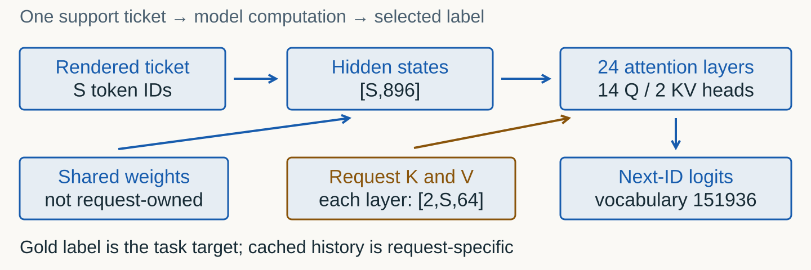
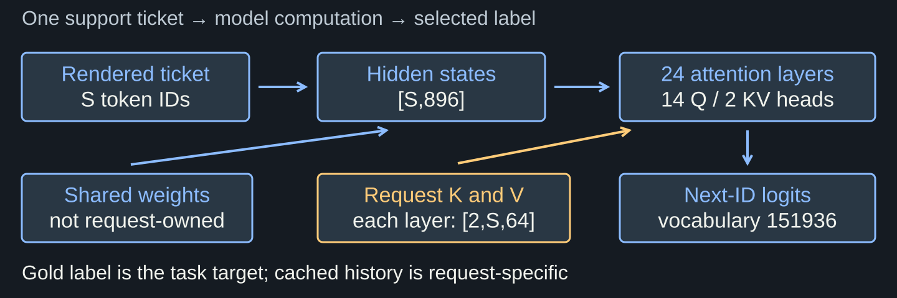
Prefill computes KV for the input and predicts the first output ID. That ID enters KV when consumed by a later forward.
Prefill считает KV для входа и предсказывает первый ID на выходе. Этот ID попадает в KV, когда его потребит следующий forward.
Prompt plus output cap is a useful conservative position budget, not an exact instantaneous cache length.
Промпт плюс потолок выхода — полезный консервативный бюджет позиций, а не точная мгновенная длина кэша.
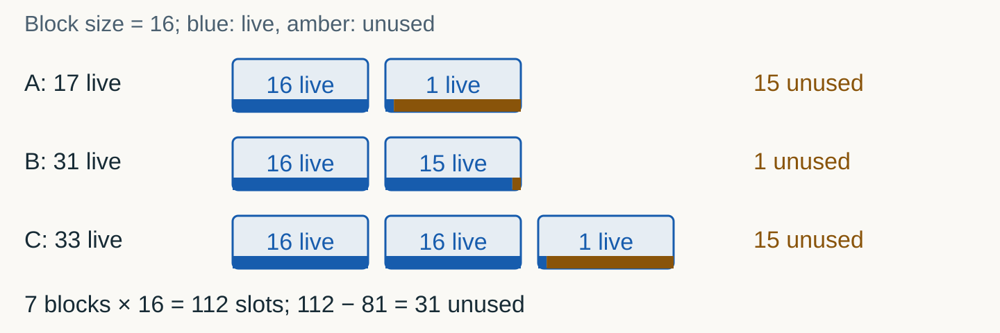
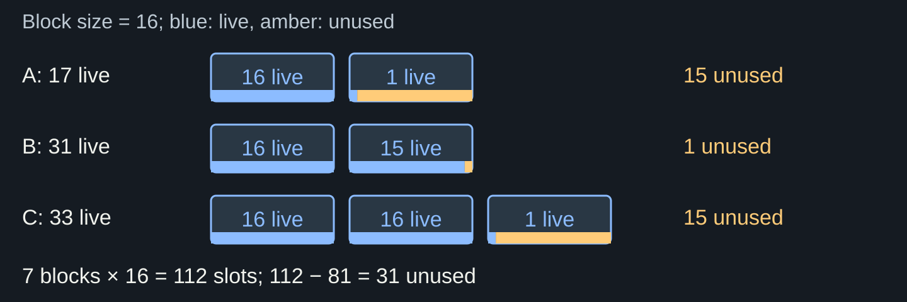
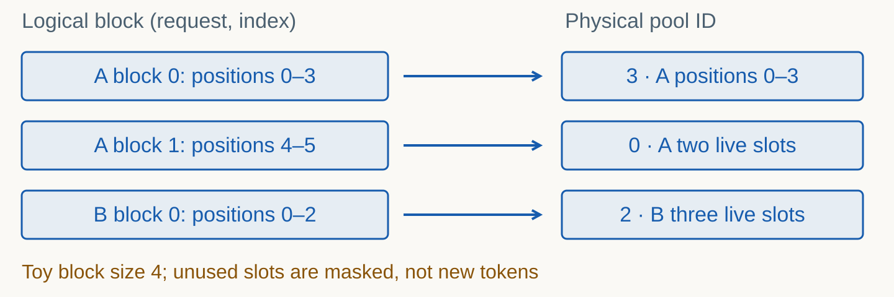
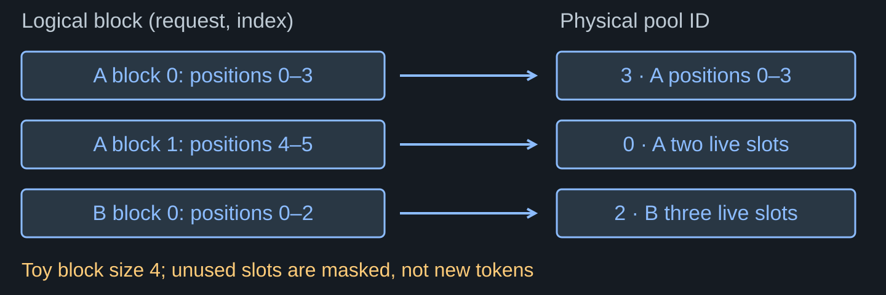
| EffectЭффект | Where it occursГде возникает | What to inspectЧто проверять |
|---|---|---|
| PaddingПаддинг | Dense static tensor batchesПлотные статические тензор-батчи | Masks and padded tensor shapeМаски и паддинговая форма тензора |
| Unused tailsНеиспользуемые хвосты | Partially live KV blocksЧастично живые KV-блоки | Live positions versus capacityЖивые позиции против ёмкости |
| Reserved poolЗарезервированный пул | Engine/allocator policyПолитика движка/аллокатора | Pool capacity versus live occupancyЁмкость пула против живой заселённости |
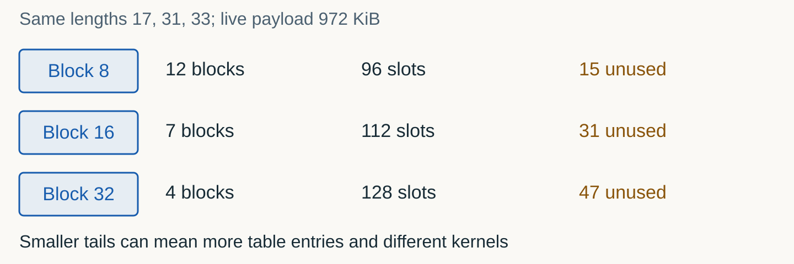
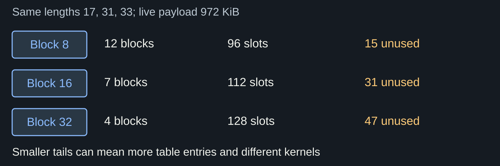
Finishing releases request references. Shared live pages cannot be overwritten while another owner needs them.
Финиш отпускает ссылки запроса. Общие живые страницы нельзя перезаписывать, пока они нужны другому владельцу.
The engine may retain an allocated KV pool for reuse. Cached, unreferenced prefixes can be evictable rather than absent.
Движок может удерживать выделенный KV-пул для повторного использования. Кэшированные нессылочные префиксы бывают вытесняемыми, а не отсутствующими.
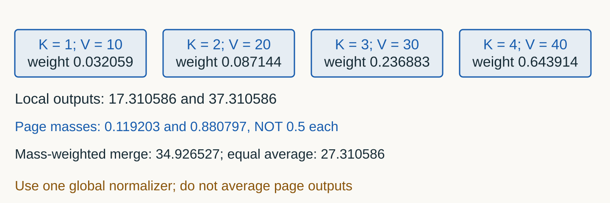
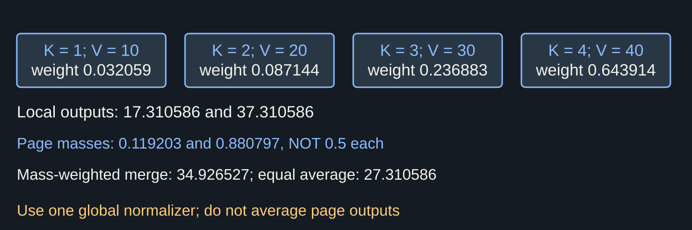
Why does “two pages” not mean “two independent softmaxes”? Use the denominator, not “the GPU knows”.
Почему «две страницы» не значит «два независимых softmax»? Опирайтесь на знаменатель, а не на «GPU сам знает».
Reading B’s keys as A’s cache changes the population. Permuting A’s correctly paired keys and values is not the same error.
Прочтение ключей B как кэша A меняет популяцию. Перестановка корректно спаренных ключей и значений A — не та же ошибка.
Placement · iteration · evidence
Размещение · итерация · свидетельства
The next input ID depends on the previous selected output. Five decode steps remain dependent.
Следующий входной ID зависит от предыдущего выбранного выхода. Пять шагов decode остаются зависимыми.
Independent sequences can contribute work to the same iteration. Finishing one need not hold all others.
Независимые последовательности могут приносить работу в одну итерацию. Финиш одной не обязан держать все остальные.
| RequestЗапрос | Arrival tickТик прибытия | Decode stepsШаги decode |
|---|---|---|
| A | 0 | 5 |
| B | 0 | 1 |
| C | 0 | 1 |
| D | 2 | 2 |
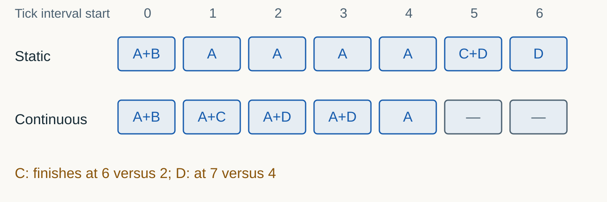
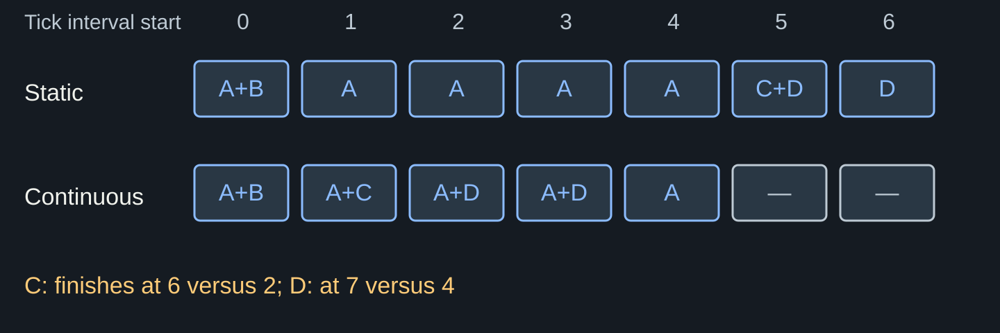
| RequestЗапрос | Static residenceПроживание (статично) | Continuous residenceПроживание (непрерывно) |
|---|---|---|
| A | 5 − 0 = 5 | 5 − 0 = 5 |
| B | 1 − 0 = 1 | 1 − 0 = 1 |
| C | 6 − 0 = 6 | 2 − 0 = 2 |
| D | 7 − 2 = 5 | 4 − 2 = 2 |
Makespan 7 versus 5 equal-cost ticks; idle slot-ticks 5 versus 1. This explains opportunity for useful work.
Makespan 7 против 5 равнодорогих тиков; простаивающие слот-тики 5 против 1. Это объясняет запас для полезной работы.
If the new iteration cost doubled, 5×2 could exceed 7×1. Actual batch shape, memory reads and kernel overhead must be measured.
Если цена новой итерации удвоится, 5×2 может превзойти 7×1. Фактическую форму батча, чтения памяти и оверхед ядер нужно измерять.
Three ordinary decode positions use 3 tokens. A 300-position prefill has 253 budget positions left this iteration.
Три обычные decode-позиции тратят 3 токена. У prefill на 300 позиций остаётся 253 бюджетных позиции в этой итерации.
Chunked prefill and KV availability affect eligibility. A sequence limit and a scheduled-token limit are different knobs.
Дробный prefill и доступность KV влияют на допуск. Лимит последовательностей и лимит планируемых токенов — разные ручки.
| ConstraintОграничение | Possible symptomВозможный симптом | Different fromНе путать с |
|---|---|---|
| Sequence limitЛимит последовательностей | Waiting request despite KV roomЗапрос ждёт, хотя место в KV есть | Token budgetТокен-бюджет |
| Token budgetТокен-бюджет | Prefill split across iterationsPrefill делится между итерациями | Sequence countЧисло последовательностей |
| KV capacityЁмкость KV | Preemption/recomputationPreemption/пересчёт | Model weightsВеса модели |
| Long iterationДлинная итерация | Decode delay during prefillЗадержка decode во время prefill | Transport failureОтказ транспорта |
Placement · iteration · evidence
Размещение · итерация · свидетельства
| Keep fixedДержим фиксированным | WhyПочему | InspectПроверяем |
|---|---|---|
| Model/revision/dtypeМодель/ревизия/dtype | Same treatment targetОдинаковый объект воздействия | Identity ledgerведомость идентичности |
| Rendered token IDsОтрендеренные токен-ID | Same actual inputsОдинаковые фактические входы | Tokenizer/template ledgerведомость токенизатора/шаблона |
| Cap and EOS policyПотолок и политика EOS | Comparable work limitsСопоставимые лимиты работы | Actual generated IDsфактически сгенерированные ID |
| Population/repeats/warmupПопуляция/повторы/прогрев | No cherry pickingбез выборки выгодного | Every attempt and clocksкаждая попытка и часы |
For this declared workload, one complete stack completed a different amount of work or used different resources.
Для этой заявленной нагрузки один полный стек сделал другой объём работы или потратил другие ресурсы.
“PagedAttention caused every millisecond of speedup.” Kernels, packing, cache policy, scheduling and framework overhead also differ.
«PagedAttention вызвал каждую миллисекунду ускорения.» Ядра, упаковка, политика кэша, шедулинг и оверхед фреймворка тоже различаются.
| QuantityВеличина | Numerator / denominatorЧислитель / знаменатель | LimitГраница |
|---|---|---|
| Cohort throughputthroughput когорты | Completed requests / cohort wall secondsзавершённые запросы / wall-секунды когорты | Not individual E2E latencyне индивидуальная E2E-латентность |
| Generated-ID rateскорость выдачи ID | Declared output count / wall secondsзаявленный счёт выходов / wall-секунды | EOS/token accounting must agreeучёт EOS/токенов должен сходиться |
| Task accuracyточность задачи | Correct / all attempted requestsверные / все попытки запросов | Keep failures and invalid outputsдержите отказы и невалидные выходы |
| TTFT | First-content arrival − client startприход первого контента − старт клиента | Requires actual streaming captureтребует настоящего стрим-захвата |
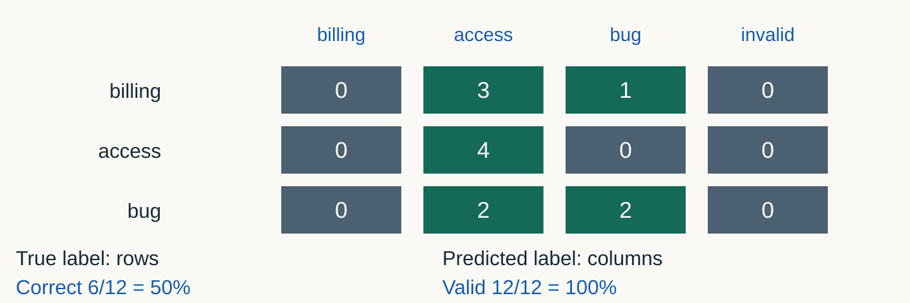
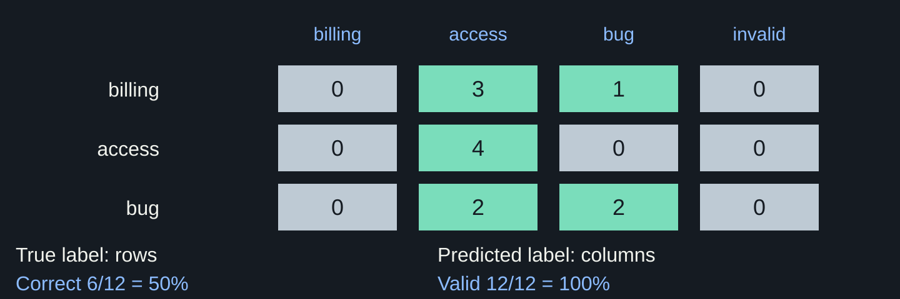
Implement independent block accounting and arrival-aware FIFO. Keep both traces and explain global attention.
Реализуйте учёт независимых блоков и FIFO с учётом прибытий. Сохраните обе трассы и объясните глобальное внимание.
Change submitted offline burst size 1 versus 4. Predict, retain all outputs, compare quality and whole-stack cohort rate, then justify a decision. Exact-code technical rehearsal passed; learner validation remains pending.
Смените размер офлайн-бурста 1 против 4. Предскажите, сохраните все выходы, сравните качество и темп когорты целого стека, затем обоснуйте решение. Техническая репетиция точного кода пройдена; валидация учащимися впереди.
| FailureОтказ | ActionДействие | Do notНельзя |
|---|---|---|
| Resource shortageНехватка ресурсов | Report observed headroom; stop before allocationСообщите наблюдаемый запас; остановитесь до аллокации | Lower a judge gateснижать гейт judge |
| OOM/timeout | Retain partial files and owned logsСохраните частичные файлы и свои логи | Relabel as completeобъявлять завершённым |
| Missing native countersНет родных счётчиков | Preserve capture limitation; fresh attemptЗафиксируйте ограничение захвата; новая попытка | Reconstruct countersреконструировать счётчики |
| Wrong task outputНеверный выход задачи | Keep literal output; report quality separatelyДержите буквальный выход; качество сообщите отдельно | Repair the model answerчинить ответ модели |
Which request is eligible? Which evidence would show that the intervention helped?
Какой запрос допущен? Какие свидетельства показали бы, что вмешательство помогло?
What changed? What stayed fixed? Which evidence supports the claim?
Что изменилось? Что осталось фиксированным? Какие свидетельства поддерживают заявление?